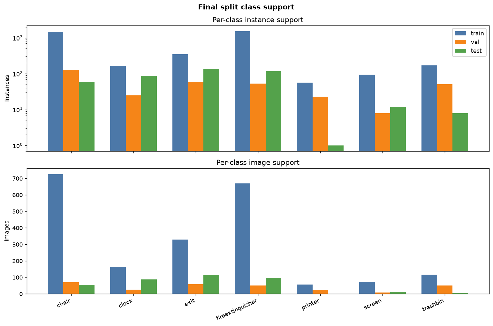
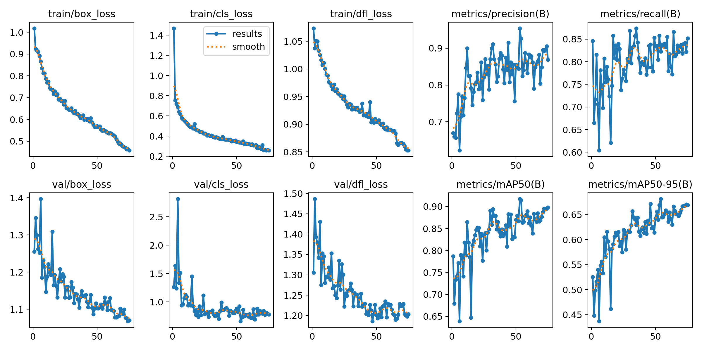
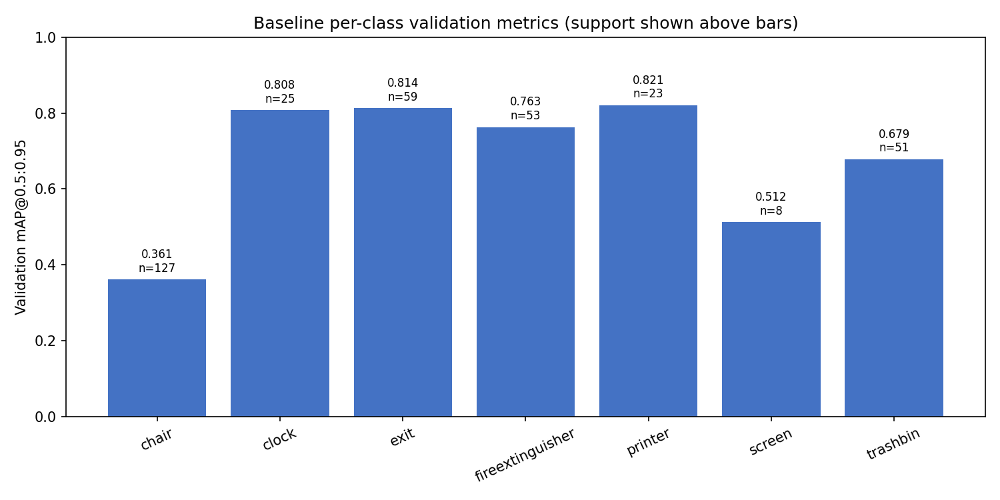
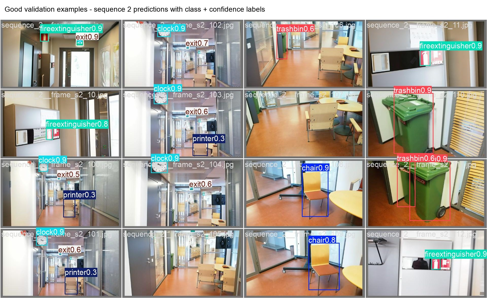
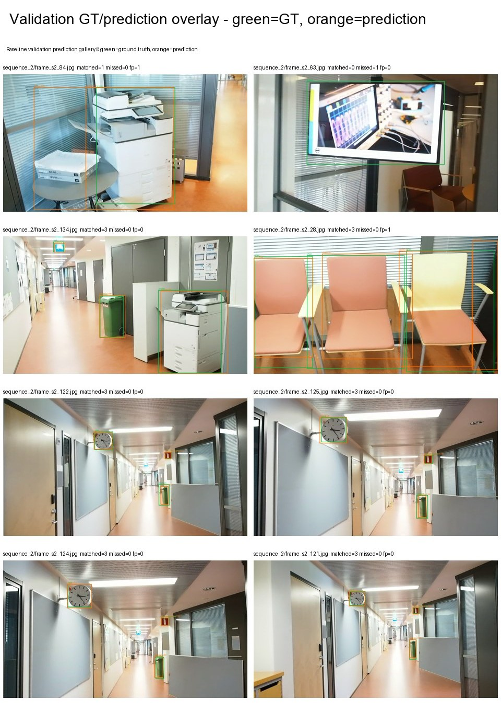
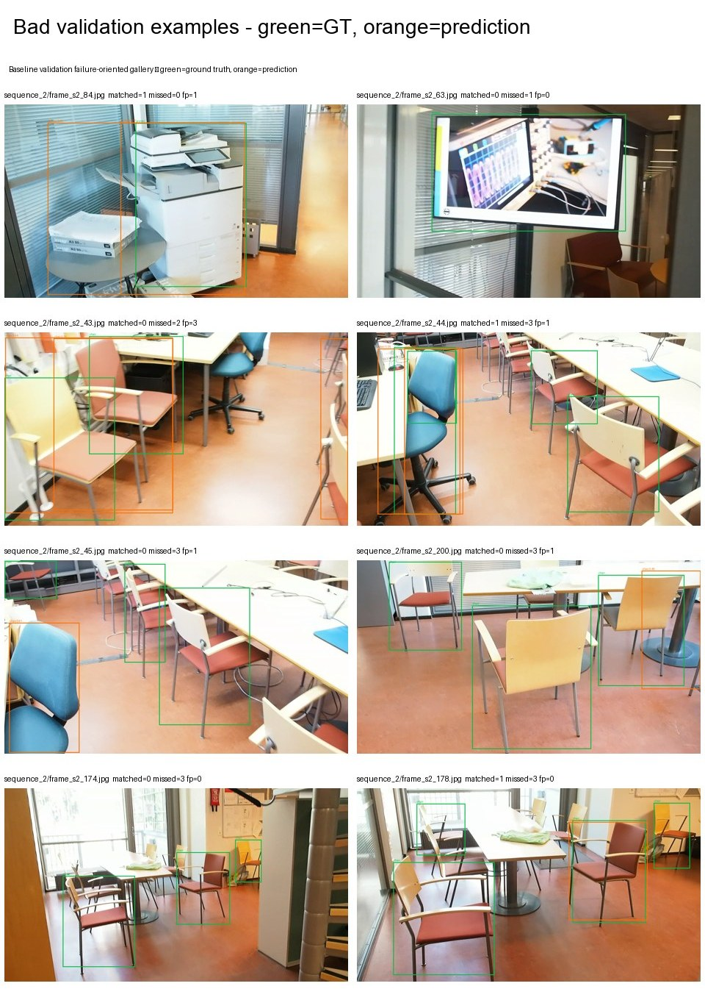

Indoor Object Detection — YOLO11 Baseline
A Google Colab YOLO11s baseline on the Indoor Object Detection Dataset, using a strict sequence-aware split to avoid adjacent-frame leakage while reporting overall and per-class validation mAP for all seven classes.
Result summary
| Item | Value |
|---|---|
| Model | YOLO11s pretrained detector |
| Validation mAP@0.5 | 0.9142 |
| Validation mAP@0.5:0.95 | 0.6797 |
| Validation split | sequence 2, 217 images, 346 boxes |
| Training runtime | Google Colab Tesla T4, 75 epochs, batch 16, image size 640 |
Split and leakage control
The dataset images come from six source video sequences. Random image-level splitting can place adjacent or near-duplicate frames across train/validation/test. I used whole source sequences instead.
| Split | Source sequences | Images | Percentage |
|---|---|---|---|
| train | 1, 3, 4, 5 | 1,809 | 81.744% |
| validation | 2 | 217 | 9.806% |
| test | 6 | 187 | 8.450% |
The split is approximate rather than exact 80/10/10 because sequence-disjoint evaluation is more reliable than exact percentages. All seven classes appear in every subset.

Validation metrics
| Metric | Value |
|---|---|
| precision | 0.9255 |
| recall | 0.8228 |
| mAP@0.5 | 0.9142 |
| mAP@0.75 | 0.7892 |
| mAP@0.5:0.95 | 0.6797 |
| Class | Boxes / images | Precision | Recall | mAP@0.5 | mAP@0.5:0.95 |
|---|---|---|---|---|---|
| chair | 127 / 70 | 0.8820 | 0.4016 | 0.6808 | 0.3613 |
| clock | 25 / 25 | 1.0000 | 0.9963 | 0.9950 | 0.8080 |
| exit | 59 / 59 | 0.9293 | 0.9661 | 0.9891 | 0.8136 |
| fireextinguisher | 53 / 51 | 1.0000 | 0.9807 | 0.9950 | 0.7633 |
| printer | 23 / 23 | 0.9024 | 1.0000 | 0.9950 | 0.8211 |
| screen | 8 / 8 | 0.8120 | 0.6250 | 0.7811 | 0.5122 |
| trashbin | 51 / 50 | 0.9527 | 0.7901 | 0.9637 | 0.6787 |


Good and bad validation examples



Limitations
The result is intentionally a single baseline rather than a tuned benchmark. Chair is the weakest class because chairs often appear in dense overlapping groups with occlusion, truncation, and varied viewpoints. Screen performance is also uncertain because the validation split has only eight screen boxes.
AI-assisted workflow
AI agents accelerated dataset auditing, split validation, Colab execution, artifact handling, and notebook QA. Final ML/evaluation decisions were manually reviewed. See AI_ASSISTED_WORKFLOW.md.